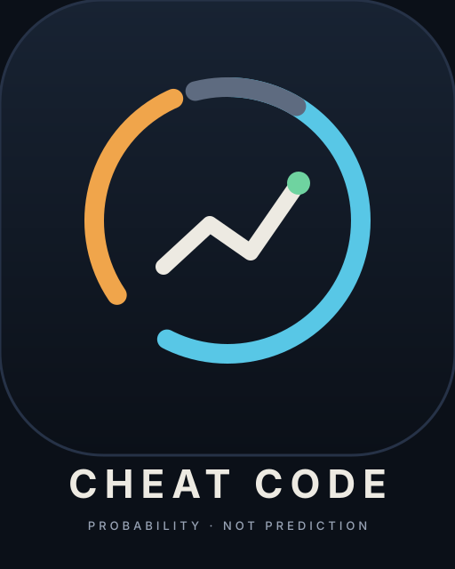

Brand assets
Cheat Code's mark is a split ring — an aqua arc for Over, an amber arc for Under, a gray push arc, and an edge line that ends in a green dot. Court at night. Two accents, each tied to one meaning; never decoration.
Palette
Ink #0B1018
Court #121A27
Chalk #EDEAE2
Dust #98A3B5
Over #58C7E6
Under #F0A54B
Gain #6FD3A0
Hairline #263247
Mark
The app-icon mark. Split ring: aqua (Over), amber (Under), gray (push), plus the edge polyline ending in a green dot.
Download SVG
Horizontal lockup

Stacked lockup


Monogram
Two interlocking C's — aqua (Over) and amber (Under) — with a green edge dot at center. Use for avatars and compact placements.
Download SVG
One-color
All chalk on ink. For embroidery, single-color print, or anywhere color isn't available.
Download SVG
Usage rules
- Background is always #0B1018 or #121A27. Never place the mark on white or light gray.
- Aqua (#58C7E6) and amber (#F0A54B) are semantic — Over and Under. Never use them as decoration.
- Minimum clear space around the mark: 1/4 of the mark's width.
- Don't stretch, rotate, or recolor the arcs. The split ring's gap is the brand.